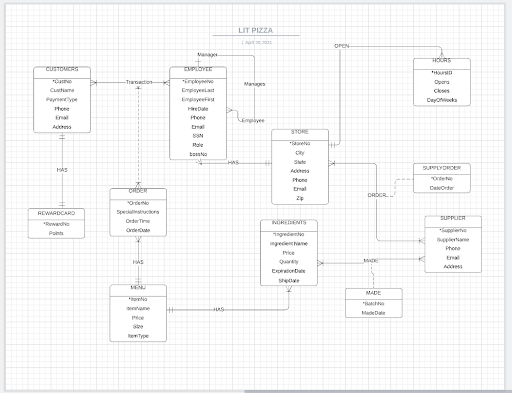

Summary
Insert Summary Here
- Ipsum
- Dolor

Visualization of Senior Mental Health by Country
For this project, I created a PowerBI dashboard to find drivers that might affect the mental health of older people. I accomplished this by examining suicide rates among older populations as reported by the WHO and then seeing if there was a correlation with other indicators such as lack of mental health facilities and domestic violence rates.

Lit Pizza Database Project
For this project, I created a database using a Lit Pizza as a mock client. To design the database, I created an Entity Relationship Diagram and a Relational Database Model. Next, I used SQL to insert tables and data to the database and then used complex SQL queries and views to analyze the data.
Django Pages Project
In this project, I used Python and the Django framework to create and host a web application. I also utilized Git and Github pages to display the application.
Accumsan mus tortor nunc aliquet
Aliquam ut ex ut augue consectetur interdum. Donec amet imperdiet eleifend
fringilla tincidunt. Nullam dui leo Aenean mi ligula, rhoncus ullamcorper.
-
Arcu accumsan
Augue consectetur sed interdum imperdiet et ipsum. Mauris lorem tincidunt nullam amet leo Aenean ligula consequat consequat.
-
Ac Augue Eget
Augue consectetur sed interdum imperdiet et ipsum. Mauris lorem tincidunt nullam amet leo Aenean ligula consequat consequat.
-
Mus Scelerisque
Augue consectetur sed interdum imperdiet et ipsum. Mauris lorem tincidunt nullam amet leo Aenean ligula consequat consequat.
-
Mauris Imperdiet
Augue consectetur sed interdum imperdiet et ipsum. Mauris lorem tincidunt nullam amet leo Aenean ligula consequat consequat.
-
Aenean Primis
Augue consectetur sed interdum imperdiet et ipsum. Mauris lorem tincidunt nullam amet leo Aenean ligula consequat consequat.
-
Tortor Ut
Augue consectetur sed interdum imperdiet et ipsum. Mauris lorem tincidunt nullam amet leo Aenean ligula consequat consequat.